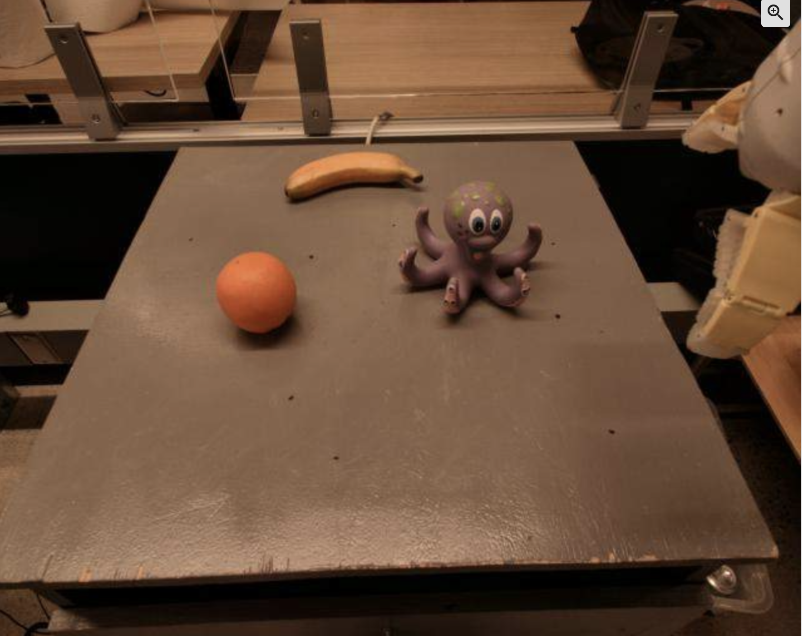
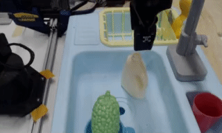

Video Language Planning
Abstract
We are interested in enabling visual planning for complex long-horizon tasks in the space of generated videos and language, leveraging recent advances in large generative models pretrained on Internet-scale data. To this end, we present video language planning (VLP), an algorithm that consists of a tree search procedure, where we train (i) vision-language models to serve as both policies and value functions, and (ii) text-to-video models as dynamics models. VLP takes as input a long-horizon task instruction and current image observation, and outputs a long video plan that provides detailed multimodal (video and language) specifications that describe how to complete the final task. VLP scales with increasing computation budget where more computation time results in improved video plans, and is able to synthesize long-horizon video plans across different robotics domains – from multi-object rearrangement, to multi-camera bi-arm dexterous manipulation. Generated video plans can be translated into real robot actions via goal-conditioned policies, conditioned on each intermediate frame of the generated video. Experiments show that VLP substantially improves long-horizon task success rates compared to prior methods on both simulated and real robots (across 3 hardware platforms).
Results
Below we share additional qualitative results of Video Language Planning.
Generated Video and Language Plans
Generated Video and Language Plans
Below are generated long-horizon language and video plans. Note that VLP is only given the first image and a single long-horizon language goal. All language subgoals and remaining frames in the video are generated.
Make a Line
Generated Language Plan (Click to view relevant part of video plan!):
Generated Video Plan:
Both language and video plans are generated and stitched together through tree search.
Make a Line
Generated Language Plan (Click to view relevant part of video plan!):
Generated Video Plan:
Both language and video plans are generated and stitched together through tree search.
Group Blocks by Color
Generated Language Plan (Click to view relevant part of video plan!):
Generated Video Plan:
Both language and video plans are generated and stitched together through tree search.
Group Blocks by Color
Generated Language Plan (Click to view relevant part of video plan!):
Generated Video Plan:
Both language and video plans are generated and stitched together through tree search.
Move Blocks to the Bottom Right Corner
Generated Language Plan (Click to view relevant part of video plan!):
Generated Video Plan:
Both language and video plans are generated and stitched together through tree search.
Move Blocks to the Top Right Corner
Generated Language Plan (Click to view relevant part of video plan!):
Generated Video Plan:
Both language and video plans are generated and stitched together through tree search.
Put the Fruits into the Top Drawer
Generated Language Plan (Click to view relevant part of video plan!):
Generated Video Plan:
Both language and video plans are generated and stitched together through tree search.
Stack Utensils, Cups, Bowls on Top of Each Other at the Center of the Table
Generated Language Plan (Click to view relevant part of video plan!):
Generated Video Plan:
Both language and video plans are generated and stitched together through tree search. All four videos are simultaneously generated.
Effect of Using Planning with VLMs and Video Models
We next analyze the effect of combining VLM and video models together through planning to synthesize long-horizon video plans. Below, we first compare with directly generating a long horizon plan using a single task-conditioned video model. We next compare a generated video plan using VLM and video model with no planning. Finally, we compare with a generated plan with extensive planning. Extensive planning is required for effective synthesis of long-horizon videos.
Make a Line
Generated Video Plan
(Single Video Model):
Generated Video Plan
(No Search):
Generated Video Plan
(Extensive Search):
Real Executions
Synthesized long horizon plans can be directly converted to policy execution using a goal-conditioned policy. We illustrate executions of different long-horizon tasks below.
Make a Line
Execution in Real:
Execution in Sim:
Group Blocks by Color
Execution in Real:
Execution in Sim:
Move Blocks to the Top Right Corner
Video of Execution:
Move Blocks to the Bottom Left Corner
Video of Execution:
Put the Fruits into the Top Drawer
Video of Execution:
Generalization
VLP decouples action prediction into visual goal generation followed by goal-conditioned policy prediction. This abstraction enables VLP to different visual inputs -- the goal-conditioned policy simply to has to focus on the relevant visual parts of visual goal.
Generalization to New Objects
VLP is able to execute the long-horizon task "move blocks to the top right corner" on three new objects (rubber donut, cupake and wooden yellow hexagon):
Generalization to New Lighting Conditions
VLP is able to execute the long-horizon task "move blocks to the bottom right corner" on a robot moved to a new office with substantially different lighting conditions (much more sunshine on the right side of the board):
Both text-to-video models and VLMs in VLP can be trained using a wealth of internet knowledge. This also allows VLP to generalize to new tasks without any explicit training. Below we illustrate successful execution on two tasks which VLP has not been trained on.
Move Moose Toy Near Green Pear
VLP is able to execute the unseen task "move moose toy near green peer".
Pick Snicker Energy Bar
VLP is able to execute the unseen task "pick snicker energy bar".
Limitations
VLP has several limitations. First, the physics of objects may not be accurately preserved (as illustrated by several of the synthesized video plans above) and objects may suddenly disappear and appear. Furthermore, world knowledge may not be correctly transferred to new tasks. Below, we show a video plan where internet knowledge is inaccurately transferred.
Pick up Octopus Toy
Initial Frame
Generated Video Plan:
Related Projects
Check out some of our related projects below!
|
We present an approach to hierarchical planning by composing a set of foundation models, trained on different aspects of internet video. We leverage iterative energy optimization as a planner that takes outputs from a language, video, and action model and synthesizes actions that are consistent across models. |
|
|  |
We cast the sequential decision making problem as a text-conditioned video generation problem, where, given a text-encoded specification of a desired goal, a planner synthesizes a set of future frames depicting its planned actions in the future, and the actions will be extracted from the generated video. Our policy-as-video formulation can represent environments with different state and action spaces in a unified space of images, enabling learning and generalization across a wide range of robotic manipulation tasks. |

|
We illustrate how conditional generative modeling is a powerful paradigm for decision-making, enabling us utilize a reward conditional model to effectively perform offline RL. We further illustrate how conditional generative modeling enables us to compose multiple different constraints and skills together. |
|
We present a method to combine different large pretrained models together by having individual models communicate with each other through iterative consensus. We illustrate how this combination of models can do zero-shot VQA, image generation, reasoning, and image generation. |
Acknowledgements
Special thanks to Tomas Lozano-Perez for helpful feedback throughout the project and Kamyar Ghasemipour for help in setting up robot experiments on Language Table setting.